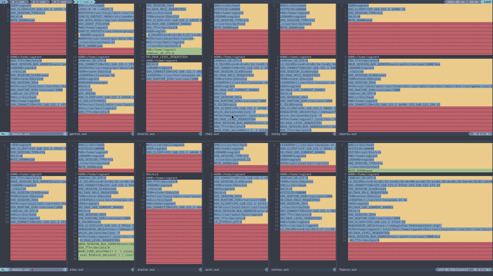
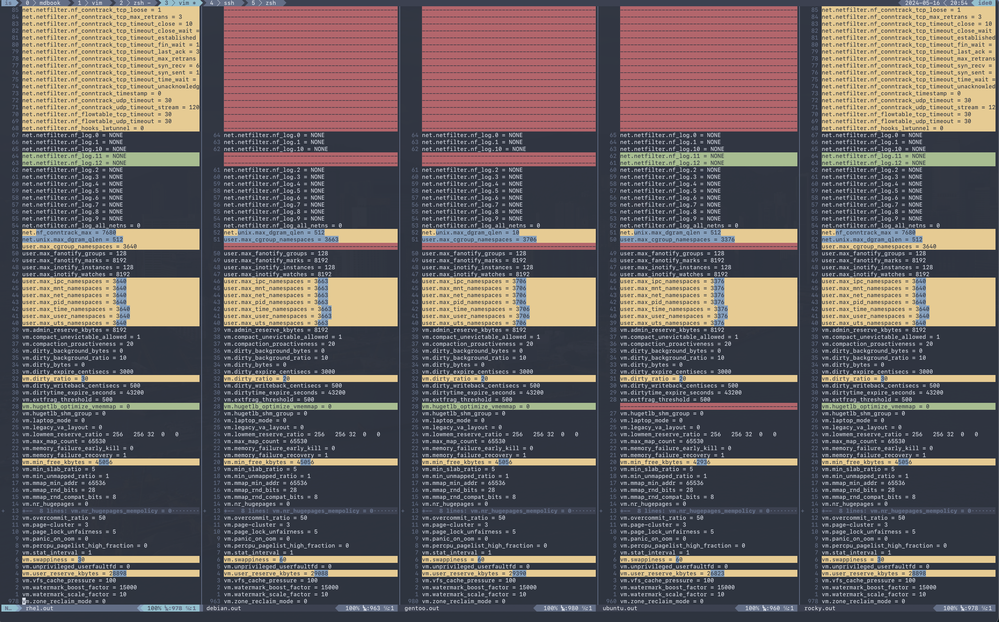

Main Differences
libc
Most of the time we assume it would be fine if we are just compiling against glibc, however, in some cases, especially ones that runs your application in a alpine docker container, it may need to be compiled to musl libc.
There may also be other small tweaks that the upstream makes to glibc. i.e., Debain glibc patches Gentoo glibc patchset
./tests/ldd.sh
| Distro | Vendor | Version | Extra |
|---|---|---|---|
| RHEL | GNU libc | 2.34 | |
| CentOS | GNU libc | 2.17 | |
| Rocky | GNU libc | 2.34 | |
| Fedora | GNU libc | 2.37 | |
| Alma | GNU libc | 2.24 | |
| Oracle | GNU libc | 2.17 | |
| Debian | Debian libc | 2.36 | 2.36-9+deb12u3 |
| Ubuntu | Ubuntu GLIBC | 2.35 | 2.35-0ubuntu3.5 |
| Alpine | musl | 1.2.4 | |
| Arch | GNU libc | 2.39 | |
| Gentoo | Gentoo glibc | 2.37 | 2.37-r7 (patchset 10) |
init
Systemd is a very common init system, however, for alpine, gentoo, and some other obscure distros, you may need to supply another form of service file. Such as a less declarative format i.e., a script.
./tests/init.sh
| Distro | Init |
|---|---|
| RHEL | systemd |
| CentOS | systemd |
| Rocky | systemd |
| Fedora | systemd |
| Alma | systemd |
| Oracle | systemd |
| Debian | systemd |
| Ubuntu | systemd |
| Alpine | busybox |
| Arch | systemd |
| Gentoo | init |
pkgconfig
pkgconfig --list-all lists all the pre-installed libraries.
RHEL, Rocky, and Alma all contain the same below set.
alma.out.sorted -> bash-completion dracut form formw libcrypt libcrypto libelf libssl libxcrypt libzstd menu menuw ncurses++ ncurses ncurses++w ncursesw openssl panel panelw systemd tic tinfo udev zlib arch.out.sorted -> audit auparse bash blkid bzip2 com_err dbus-1 devmapper devmapper-event e2p efiboot efisec efivar expat ext2fs fdisk form formw gio-2.0 gio-unix-2.0 girepository-2.0 glib-2.0 gmodule-2.0 gmodule-export-2.0 gmodule-no-export-2.0 gmp gmpxx gnutls gobject-2.0 gpg-error gpgme-glib gpgme gssrpc gthread-2.0 history hogweed hwdata icu-i18n icu-io icu-uc jansson json-c kadm-client kadm-server kdb kmod krb5-gssapi krb5 ksba lastlog2 lber ldap libacl libalpm libarchive libargon2 libassuan libattr libbpf libbrotlicommon libbrotlidec libbrotlienc libbtrfsutil libcap libcap-ng libcrypt libcrypto libcryptsetup libcurl libdebuginfod libdw libedit libelf libevent_core libevent_extra libevent libevent_openssl libevent_pthreads libffi libgcrypt libidn2 libip4tc libip6tc libipq libiptc libkeyutils libkmod liblz4 liblzma libmagic libmakepkg libmnl libmpdec libmpdec++ libnetfilter_conntrack libnfnetlink libnftnl libnghttp2 libnghttp3 libnl-3.0 libnl-cli-3.0 libnl-genl-3.0 libnl-idiag-3.0 libnl-nf-3.0 libnl-route-3.0 libnl-xfrm-3.0 libnsl libpcap libpci libpcre2-16 libpcre2-32 libpcre2-8 libpcre2-posix libpkgconf libproc2 libpsl libpsx libsasl2 libseccomp libsecret-1 libsecret-unstable libssh2 libssl libsystemd libtasn1 libtirpc libudev libusb-1.0 libverto-libevent libverto libxcrypt libxml-2.0 libzstd lzo2 menu menuw mit-krb5-gssapi mit-krb5 mount mpfr ncurses++ ncurses ncurses++w ncursesw nettle npth openssl p11-kit-1 pamc pam_misc pam panel panelw popt python-3.12-embed python-3.12 python3-embed python3 readline smartcols sqlite3 ss sysprof-capture-4 systemd tic tinfo tss2-esys tss2-fapi tss2-mu tss2-policy tss2-rc tss2-sys tss2-tcti-cmd tss2-tcti-device tss2-tctildr tss2-tcti-libtpms tss2-tcti-mssim tss2-tcti-pcap tss2-tcti-spi-helper tss2-tcti-swtpm udev uuid xtables zlib centos.out.sorted -> bash-completion dracut form formw menu menuw ncurses++ ncurses ncurses++w ncursesw panel panelw shared-mime-info systemd tic tinfo udev debian.out.sorted -> bash-completion iso-codes libevent_core libevent_extra libevent libevent_openssl libevent_pthreads shared-mime-info systemd udev xkeyboard-config fedora.out.sorted -> dracut form formw libbsd libbsd-overlay libcrypt libcrypto libelf libmd libssl libxcrypt libzstd menu menuw ncurses++ ncurses ncurses++w ncursesw openssl panel panelw shared-mime-info systemd tic tinfo udev valgrind zlib gentoo.out.sorted -> blkid com_err dracut e2p efiboot efisec efivar einfo expat expatw ext2fs fdisk form formt formtw formw freetype2 gio-2.0 gio-unix-2.0 glib-2.0 gmodule-2.0 gmodule-export-2.0 gmodule-no-export-2.0 gmp gmpxx gnutls gobject-2.0 gpg-error gpgme-glib gpgme gthread-2.0 hogweed hwdata jsoncpp ksba libacl libarchive libassuan libattr libb2 libcap libcares libcrypt libcrypto libcurl libdaemon libdw libelf libestr libexslt libfastjson libffi libgcrypt libidn2 libip4tc libip6tc libiptc libkmod liblzma libmagic libmnl libnghttp2 libnsl libpci libpcre2-16 libpcre2-32 libpcre2-8 libpcre2-posix libpipeline libpkgconf libpng16 libpng libprocps libpsx librhash libseccomp libsodium libssl libtasn1 libtirpc libudev libusb-1.0 libuv libxcrypt libxml-2.0 libxslt libzstd lzo2 menu menut menutw menuw mount mpfr ncurses++ ncurses ncurses++t ncursest ncurses++tw ncursestw ncurses++w ncursesw nettle openrc openssl pamc pam_misc pam panel panelt paneltw panelw passwdqc popt python-3.11-embed python-3.11 python-3.12-embed python-3.12 readline shared-mime-info smartcols sqlite3 ss tcl tinfo tinfot tinfotw tinfow udev uuid xtables zlib oracle.out.sorted -> bash-completion dracut shared-mime-info systemd udev rhel.out.sorted -> bash-completion dracut form formw libcrypt libcrypto libelf libssl libxcrypt libzstd menu menuw ncurses++ ncurses ncurses++w ncursesw openssl panel panelw systemd tic tinfo udev zlib rocky.out.sorted -> bash-completion dracut form formw libcrypt libcrypto libelf libssl libxcrypt libzstd menu menuw ncurses++ ncurses ncurses++w ncursesw openssl panel panelw systemd tic tinfo udev zlib ubuntu.out.sorted -> bash-completion iso-codes libdmmp shared-mime-info systemd udev xkeyboard-config
Arch and Gentoo comes with the largest sit due to the nature of compiling software on their distro, specifically Gentoo.
And most of the rest of the distros comes with very similar sets of libraries, such as openssl, udev, systemd, ncurses, panel, etc...
systemd
Systemd, being the most popular init system for Linux distros, can also be running different versions and compile flags.
| RHEL | CentOS | Rocky | Fedora | Alma | Oracle | Debian | Ubuntu | Arch | |
|---|---|---|---|---|---|---|---|---|---|
| Version | 252-18.el9 | 219 | 252-18.el9 | 253.14-1.fc38 | 252-18.el9 | 219 | 252.19-1~deb12u1 | 249.11-0ubuntu3.11 | 255.5-3-arch |
| PAM AUDIT SMACK UTMP ACL BLKID ELFUTILS KMOD XZ LZ4 LIBCRYPTSETUP | INCL | INCL | INCL | INCL | INCL | INCL | INCL | INCL | INCL |
| LIBFDISK PCRE2 IDN2 BZIP2 ZLIB ZSTD TPM2 P11KIT | INCL | INCL | INCL | INCL | INCL | INCL | INCL | ||
| SELINUX | INCL | INCL | INCL | INCL | INCL | INCL | INCL | INCL | EXCL |
| APPARMOR | EXCL | EXCL | EXCL | EXCL | EXCL | EXCL | INCL | INCL | EXCL |
| IMA | INCL | INCL | INCL | INCL | INCL | INCL | INCL | INCL | INCL |
| SECCOMP | INCL | EXCL | INCL | INCL | INCL | EXCL | INCL | INCL | INCL |
| GCRYPT | INCL | INCL | INCL | EXCL | INCL | INCL | INCL | INCL | INCL |
| GNUTLS | INCL | INCL | INCL | INCL | INCL | INCL | INCL | INCL | |
| OPENSSL | INCL | INCL | INCL | INCL | INCL | INCL | INCL | ||
| SYSVINIT | INCL | INCL | INCL | INCL | INCL | INCL | INCL | INCL | EXCL |
| CURL | INCL | INCL | INCL | INCL | INCL | INCL | INCL | ||
| IDN | EXCL | INCL | EXCL | EXCL | EXCL | INCL | EXCL | EXCL | EXCL |
| IDN2 | INCL | INCL | INCL | INCL | INCL | INCL | INCL | ||
| GNUTLS | EXCL | ||||||||
| FIDO2 | EXCL | EXCL | INCL | EXCL | INCL | INCL | INCL | ||
| IPTC | EXCL | EXCL | EXCL | EXCL | INCL | INCL | INCL | ||
| PWQUALITY | EXCL | EXCL | INCL | EXCL | EXCL | EXCL | INCL | ||
| QRENCODE | EXCL | EXCL | INCL | EXCL | INCL | EXCL | INCL | ||
| BPF_FRAMEWORK | EXCL | EXCL | INCL | EXCL | EXCL | INCL | |||
| XKBCOMMON | INCL | INCL | INCL | INCL | EXCL | EXCL | INCL | ||
| P11KIT | EXCL | ||||||||
| default-hierarchy | unified | unified | unified | unified | unified | unified | unified |
Environments and other shell behaviors
Your environments come from your shell. First, let's look into what your default shell is.
./tests/default_shell.sh
| Distro | Default Shell |
|---|---|
| RHEL | /bin/bash |
| CentOS | /bin/bash |
| Rocky | /bin/bash |
| Fedora | /bin/bash |
| Alma | /bin/bash |
| Oracle | /bin/bash |
| Debian | /bin/bash |
| Ubuntu | /bin/bash |
| Alpine | /bin/bash |
| Arch | /usr/bin/bash |
| Gentoo | /bin/bash |
It appears that they're all bash, which makes our lives easier.
To quote from the bash manpage
When bash is invoked as an interactive login shell, or as a non-interactive shell with the --login option, it first reads and executes commands from the file /etc/profile, if that file exists. After reading that file, it looks for ~/.bash_profile, ~/.bash_login, and ~/.profile, in that order, and reads and executes commands from the first one that exists and is readable. The --noprofile option may be used when the shell is started to inhibit this behavior.
You can use your favorite diff tool to inspect the differences in all of these files from the out directory. Our test covers .bash_profile, .bash_login, .profile and /etc/profile.
First, for /etc/profile, RHEL, CentOS, Oracle, ALma, Fedora, and Rocky all have this following lines.
TODO
For .bash_profile, Alma, CentOS, Fedora, Gentoo, Oracle, RHEL, and Rocky all have lines to load .bashrc if it exists.
And CentOS and Oracle having a line to add $HOME/.local/bin:$HOME/bin to the PATH.
.bash_login was empty/nonexistant on all of the distros we tested against.
For .profile, only Ubuntu and Debian had these two files.
if [ "${PS1-}" ]; then
if [ "${BASH-}" ] && [ "$BASH" != "/bin/sh" ]; then
# The file bash.bashrc already sets the default PS1.
# PS1='\h:\w\$ '
if [ -f /etc/bash.bashrc ]; then
. /etc/bash.bashrc
fi
else
if [ "$(id -u)" -eq 0 ]; then
PS1='# '
else
PS1='$ '
fi
fi
fi
if [ -d /etc/profile.d ]; then
for i in /etc/profile.d/*.sh; do
if [ -r $i ]; then
. $i
fi
done
unset i
fi
With Debian having this one extra block
if [ "$(id -u)" -eq 0 ]; then PATH="/usr/local/sbin:/usr/local/bin:/usr/sbin:/usr/bin:/sbin:/bin" else PATH="/usr/local/bin:/usr/bin:/bin:/usr/local/games:/usr/games" fi export PATH
File Structures
With Linux's "everything is a file" model, developers tend to make certain assumptions about the system provided psudo-filesystems such as the root tree, procfs, and sysfs. But could those directories change?
Root FS
./tests/root.sh outputs resulting, filtered files to out/root
We are also able to confirm that boot, dev, etc, home, mnt, opt, proc, root, run, srv, sys, tmp and usr exists on all of our distros.
To generate our table, we are also running this to exclude the dir thats standard across all distros.
for i in *.result; do echo -n "$i -> " && cat $i | egrep -v "\.|boot|dev|etc|home|mnt|opt|proc|root|run|srv|sys|tmp|usr" | tr -d "\n" && echo ;done
And for the remaining directories.
| RHEL | CentOS | Rocky | Fedora | Alma | Oracle | Debian | Ubuntu | Arch | Gentoo | Alpine | |
|---|---|---|---|---|---|---|---|---|---|---|---|
| afs media | X | X | X | X | |||||||
| media | X | X | X | X | X | X | X | X | X | X | |
| snap | X | ||||||||||
| distfiles | X |
Proc FS
./tests/procfs.sh outputs resulting, filtered files to out/root Then, use your favorite diff tool to visually inspect the differences.
vim -d debian.out.result alma.out.result alpine.out.result arch.out.result centos.out.result fedora.out.result vim -d debian.out.result gentoo.out.result oracle.out.result rhel.out.result rocky.out.result ubuntu.out.result
| RHEL | CentOS | Rocky | Fedora | Alma | Oracle | Debian | Ubuntu | Alpine | Gentoo | Arch | |
|---|---|---|---|---|---|---|---|---|---|---|---|
| bootconfig | X | X | X | X | X | X | X | ||||
| dynamic_debug | X | X | X | X | X | X | X | X | X | ||
| config.gz | X | X | |||||||||
| kcore | X | X | X | X | X | X | X | X | X | X | X |
| kpagecgroup | X | X | X | X | X | X | X | X | X | ||
| latency_stats | X | X | |||||||||
| mdstat | X | X | X | X | X | X | X | X | |||
| pressure | X | X | X | X | X | ||||||
| sched_debug | X | X | |||||||||
| scsi | X | X | X | X | X | X | X | X | |||
| slabinfo | X | X | X | X | X | X | X | X | X | X | |
| thread-self | X | X | X | X | X | X | X | X | X | ||
| timer_stats | X | X | |||||||||
| version_signature | X |
Sys FS
Simply use your favorite diff tool to look at all the .out files at out/sysfs
vim -d debian.out gentoo.out oracle.out rhel.out rocky.out ubuntu.out vim -d debian.out alma.out alpine.out arch.out centos.out fedora.out
We're able to see that they're all the same.
Dev FS
You can use your favorite diff tool to visually inspect the differences.
vim -d debian.out.result gentoo.out.result oracle.out.result rhel.out.result rocky.out.result ubuntu.out.result vim -d debian.out.result alma.out.result alpine.out.result arch.out.result centos.out.result fedora.out.result
We're able to see that the below are always there in the distros that we're testing against.
block bus console cpu_dma_latency disk fb0 fd full input kmsg kvm log mem mqueue null port ptmx pts random rtc0 shm stderr stdin stdout tty vcs urandom zero
Sudo Secure Path
Sudo secure path is the path that is used when a user uses sudo.
When you write an administrative tool and expects something to be only executed with root permissions, you might install something to one of the sbin directories.
One notable divergence is that on any of the RHEL derivatives, /usr/local/bin is not included in sbin, while every other distro we tested with has it in the secure path.
./tests/secure_path.sh
| Distro | /sbin | /bin | /usr/sbin | /usr/bin | /usr/local/sbin | /usr/local/bin | /snap/bin | /var/lib/snapd/snap/bin |
|---|---|---|---|---|---|---|---|---|
| RHEL | X | X | X | X | ||||
| CentOS | X | X | X | X | ||||
| Rocky | X | X | X | X | ||||
| Fedora | X | X | X | X | X | X | X | |
| Alma | X | X | X | X | ||||
| Oracle | X | X | X | X | ||||
| Debian | X | X | X | X | X | X | ||
| Ubuntu | X | X | X | X | X | X | X | |
| Alpine | X | X | X | X | X | X | ||
| Arch | X | X | X | X | X | X | ||
| Gentoo | X | X | X | X | X | X |
kernel config and sysctl
Kernel config, the configuration that the Linux kernel is compiled with, as well as the runtime kernel parameters(sysctl), can also vary drastically across distros.
I.e., all RHEL based distros have a lowered swappiness because they were originally built for server workloads. optimized for server workloads.
vm.swappiness
| Distro | Swappiness |
|---|---|
| RHEL | 30 |
| CentOS | 30 |
| Rocky | 30 |
| Fedora | 30 |
| Alma | 30 |
| Oracle | 30 |
| Debian | 60 |
| Ubuntu | 60 |
| Alpine | 60 |
| Arch | 60 |
| Gentoo | 60 |
For this divergence point, we're recording each distro's sysctl -a runtime params, and the /boot/config-$(uname -r) kernel config(compiled in).
Please note that arch linux does not come with the config file, and alpine stores them under a non-standard name under /boot, they have been manually extracted into the out directory as alpine-kernel-config (taken from /boot/config-virt) and arch-kernel-config (taken from /proc/config.gz)
Here, you can see the differences to the system request key, how they're written in the kernel config (capitalized), and sysctl (lowercase).
./tests/sysrq.sh
| Distro | kernel.sysrq | CONFIG_MAGIC_SYSRQ_DEFAULT_ENABLE |
|---|---|---|
| RHEL | 16 | 0x1 |
| CentOS | 16 | |
| Rocky | 16 | 0x1 |
| Fedora | 16 | 0x0 |
| Alma | 16 | 0x1 |
| Oracle | 16 | |
| Debian | 438 | 0x01b6 |
| Ubuntu | 176 | 0x01b6 |
| Alpine | 1 | 0x1 |
| Gentoo | 0 | 0x0 |
| Arch | 16 | 0x0 |
There are a lot of other differences, such as the strictness of it's network protocols, as well as virtual memory parameters. Please also use your favorite diffing tool in the out directories for sysctl and kernel_config to explore the differences.
See also:
man 5 proc
/proc/config.gz (since Linux 2.6) This file exposes the configuration options that were used to build the currently running kernel, in the same format as they would be shown in the .config file that resulted when configuring the kernel (using make xconfig, make config, or similar). The file contents are compressed; view or search them using zcat(1) and zgrep(1). As long as no changes have been made to the following file, the contents of /proc/config.gz are the same as those provided by:
cat /lib/modules/$(uname -r)/build/.config
/proc/config.gz is provided only if the kernel is configured with CONFIG_IKCONFIG_PROC.
From our suite of distros, only arch and gentoo comes with a config.gz in proc.
sh
When writing POSIX compliant scripts for usually systems purposes. We tend to use /bin/sh as our shabang. However, they're usually just symlinks to other shell interpreters. Most of the time it is bash with restricted shell (see man 1 bash, under Restricted Shell).
However in other times, it may be to busybox, or dash.
| Distro | /bin/sh |
|---|---|
| RHEL | /bin/bash |
| CentOS | /bin/bash |
| Rocky | /bin/bash |
| Fedora | /bin/bash |
| Alma | /bin/bash |
| Oracle | /bin/bash |
| Debian | /bin/dash |
| Ubuntu | /bin/dash |
| Alpine | /bin/busybox |
| Arch | /bin/bash |
| Gentoo | /bin/bash |